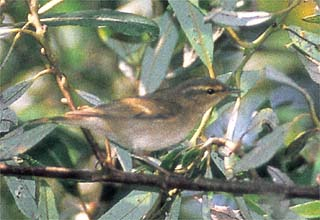

|  |
|
Figure 9. Arctic Warbler, Phylloscopus borealis (1996-158), Pismo State Beach, Oceano, San Luis Obispo Co., 28 Sep 1996, the second for California. Note the long bold supercilium coming to a sharp point at the back of the head. Photo by Brad Schram |